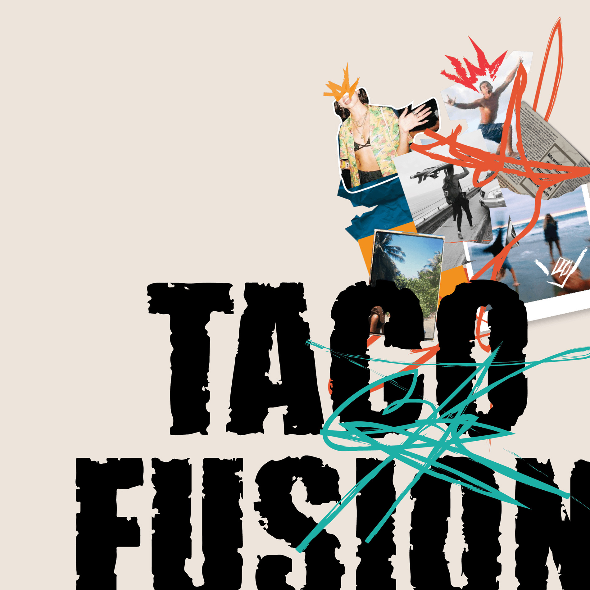

I’m Alejandra Bernuy, a design student from Lima, Peru, passionate about creating impactful visual stories. I moved to Vancouver, BC, to pursue a Design Formation diploma at Langara College, and I am currently working towards a Bachelor of Design in Visual Communication at IDEA School in Capilano University. I have an enthusiasm for brand design, but I also consider myself a versatile creative with skills in various design streams and complementary skills in drawing, illustration, and oil painting.
I thrive on challenging projects that help me develop as a professional and a person, and I am eager to contribute my creativity and skills to meaningful projects that inspire and resonate with people.
© 2024-2026. Hand crafted with ❤ by Alejandra Bernuy.